PeeCoin Charts PeeCoin 应用程序为 BNB 链代币（以前称为币安智能链）提供图表、加密分析和投资组合管理，旨在改善现有 DEX 的加密交易体验。多链在路线图上。 PeeCoin 应用程序帮助投资
PolyCub PolyCUB 是一个收益优化器平台，它为 DeFi 用户提供了一种安全便捷的方式来发现 Polygon 网络上的收益和赚取收益。 该平台由 LeoFinance 项目构建，该项目在过去 3 年中在加密领域构
PolyCuppa Finance PolyCuppa Finance 是 Polygon Matic 网络上的一个新的 DeFi 项目。这是 PolyBrew 项目的第三层，以 CUPPA 为特色，最大供应量为 50,000 个代币。 在审查了几种单产农业模式后，我们决定在我们的平台上采
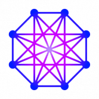 POLYDeFi POLYDeFi 是在 Polygon 网络上运行的透明的下一代分层 IFO 启动板。通过 POLYDeFi，投资者可以以最安全的方式参与独家 IFO 发布。POLYDeFi 将始终专注于他们
POLYDEFY PolyDefy 通过引入完全通缩的农业代币经济学彻底改变了农业。每笔交易征收 10% 的税，交易价值的 4% 用于农业奖励， 1.5% 对持有人、2% 给非永久性损失保险 (ILI) 基金、2
PolyDino PolyDino Finance 是 Polygon 上的一个新 DeFi 项目，采用通货紧缩代币模型，最大供应量为 64,000 个 DINO 代币。 在审查了几种单产农业模式后，我们决定在我们的平台上采用低排放率、低供
PolyDragon 伟大的 DeFi 团队关于加密世界的所有愿望的 IDEAL 项目：a)龙之巢穴，向 DGold 代币持有者支付 USDC 股息基金 b) NFT 游戏：我们正在创造最好的 Dragon Legends NFT 游戏！c)奖励 APR
PolyDragon Finance $FIRE 为我们革命性的质押池和收益农场提供动力。它利用专门的 RFI 代币结构实现无限池奖励，同时保持固定供应。作为 RFI 代币，$FIRE 使用一个公平的系统，
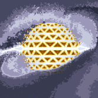 PolyDyson Poly Dyson，基于 Polygon 的上一代单产农业，具有聊天功能。Polygon 链最初是以 Matic 为名推出的一层网络。在推出时，Matic 打算成为一个 &ldqu
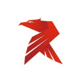 PolyEagle PolyEagle是一个基于 Goosedefi 的 Polygon 网络上的 Yield Farming 协议，具有燃烧机制、NFT、彩票等附加功能。Yield farming可以为加密货币持有人提供A
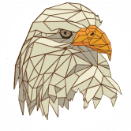 PolyFalcon Finance PolyFalcon Finance是使用 Polygon-Matic 网络上 DeFi 中最好的农场的 Yield Farming 应用程序。在 PolyFalcon 上投注并赚取更多。Yield farming可以为加密货币持有人提供APY（年
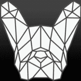 Polyfrenchie Finance POLYFRENCHIE是第一个随机锁定的多链收益农业平台，Polyfrenchie Finance 是一个在币安智能链和 Polygon 上运行的去中心化多链农场收益项目
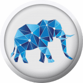 PolyGaj Finance Polygaj 是围绕两个代币 GAJ 和 GMAM 构建的 DeFi 和 NFT 产品生态系统中的第一个产品。 GAJ 代币旨在成为 DeFi 产品系列的核心，Polygaj 是第一个 dapp。其他产品将在未
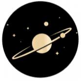 Polygalaxy Finance Polygalaxy Finance是一个在Polygon 上的多星系产量农场！通过收益耕作赚取 $GALAXY，然后将其投入矿池以赚取更多代币。 由于 POLYGALAXY 正在为 Polygon 网络
PolyGamma Finance PolyGamma Finance 是 PolyAlpha Finance 的社区主导的稳定收益农业协议的第二层 (L3)，该协议专门建立在 Polygon 生态系统上。对于高水平的安全和保障，PolyBta Finance 是： ✅由 PALADIN 审核
PolyGhost Finance PolyGhost Finance 是一种基于 Polygon 网络的新型 Yield Farming 协议，在安全和投资方面开发了强大的功能，以提供最好的经验。该农场的设计理念是提供一个安全而简单的投资平台，具有
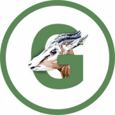 PolyGoat Finance PolyGoat 是一个全新的DeFi项目，由经验丰富的开发团队设计，是Polygon上的第三代通缩收益农场。 Polygon 一直专注于其用户和开发者的体验。自重塑品牌以
Polygold Finance Polygold Finance是一个基于 Polygon/Matic 链的创新加密货币投资和收益农业平台，旨在通过将存款费用用于低风险投资来创建一个具有可持续、长期增长的生态系统。这
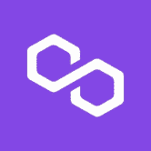 Polygon POS Bridge Polygon POS Bridge是一个建立在以太坊上的全球可持续 Web3 基础设施。将跨链资产带入 Polygon 链的安全、快速、最安全的方式。支持在Polygon 网络上发送和接
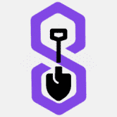 PolygonFarm Finance PolygonFarm Finance 是 Polygon 网络上的下一代稳定收益农业协议，具有许多独特和创造性的功能，可确保我们的 SPADE 代币长期保持稳定，从而确保所有用户的 APR / 收入稳定。我们将引
PolyGoon PolyGoon是 Polygon (Matic) 网络上创新且可靠的下一代自动做市商 (AMM) 和 Yield Farm。它在具有独特功能和属性的第二层多边形（Matic）网络上以较低的成本
PolyGrass PolyGrass Finance是运行在Polygon Blockchain上的最新 Generation Yield Farm 去中心化交易所，它主要是 Goose Finance 的一个分支。 这是我们公司未来的第一个收益
PolyHeat Finance Polygon 上有些东西正在升温………而且不是那些代币在燃烧😉。向您介绍 Polygon 最热门的新单产农场 PolyHeat Finance！你可能听说过这个词被其他所有
PolyHeaven Finance PolyHeaven Finance 是第一个在 Polygon 上运行的奇迹收益农场。 Polygon 上的高产农场，灵感来自 BSC 上的熔岩蛋糕金融。耶稣是通往天堂的大门。耶稣总是张开双臂等着我们，随时欢迎我
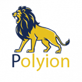 Polyion Polyion 是一个基于 Polygon 的 Yield Farming 平台。它的原生代币是 $LION。 Polygon 网络的快速扩张推动 Polyion 向这一层 2 移动，以使所有投资者都能从低交易成本和短交易时间中受益。
PolyLion PolyLion 是一个新的去中心化交易所，Polygon Network 上的单产农业项目在正式启动几天后就飙升至令人印象深刻的水平。在 11 天内，该平台锁定的总价值 (TVL) 已达到
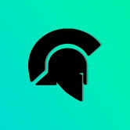 Palladium Finance 名称：钯金金融 年利率：151,631.1% 代币：$PALD - 由 Solidity Finance 审计。 -Multisig 转移资金以提高安全性。 -我们将成为 BSC 上第一个加入 Sphere 的量子流动性池的
PoolTogether 什么是 PoolTogether ？ PoolTogether 是一个去中心化的开源区块链协议，用于与奖金挂钩的储蓄。 复制“与奖品挂钩的储蓄账户”，所有储户都有机会赢取奖品，而无需冒着存入资金
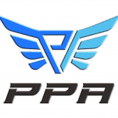 PopAngel 什么是 PopAngel？ 欢迎来到 PopAngel。Polygon 网络上的下一个 DeFi。质押您的 NFT 并赚取更多 PPA 高达 3.8 倍。还有高达 20% 的 10 代推荐
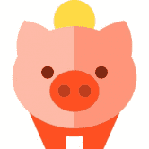 Pork Swap 什么是 PorkSwap？ PorkSwap 是建立在币安智能链之上的去中心化现货和期货交易平台，其使命是使金融获取民主化，这与去中心化金融 (DeFi) 的理念相关。 目前大
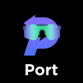 Port Finance 什么是 Port Finance？ Solana 上的第一个非托管流动性协议 Port Finance 是一个贷款协议，旨在提供一整套固定收益产品，包括浮动利率贷款、固定利率贷款和利率掉期
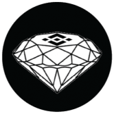 PoshVault 什么是 PoshVault ？ Posh Vault 以 bnb 形式向将 Posh 代币存入保险库的持有人支付股息。7% 分配给矿池，3% 分配给推荐人。 OSH VAULT是该项目的一部分，即利息代币。该项
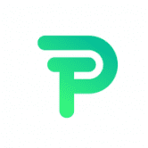 Position Exchange 什么是 Position Exchange？ Position Exchange 是一个去中心化的加密平台，具有完整的生态系统，旨在弥合人与加密货币之间的差距并增强 DeFi 体验。 该协议完全由其社区拥
Predator Finance 什么是 Predator Finance？ 将改变游戏规则的 DEFI Predator Finance是一个由平衡计分卡驱动的dApp。这些项目是一个DeFi平台。在上面，您将能够以被
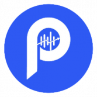 Predictcoin 什么是 Predictcoin？ Predictcoin 是一个加密资产价格预测 DAO，用户可以在其中质押、耕种和预测各种加密和非加密资产的价格，包括 NFT 和体育游戏。p
PretzelSwap 什么是 PretzelSwap ？ PretzelSwap 是在币安智能链 (BSC) 和 PancakeSwap 交易所上运行的自动做市商 (AMM)。 PretzelSwap 是完全自给自足的，并且正在完全有机地增长。 通过小而慢的方法，我们实现了
Printer Financial 什么是 Printer Financial？ 第一个允许您随身携带 PAPER 收益的跨链协议。 Paper 无需与原生代币挂钩，而是以零成本免费跨过所有可用链。不收费，不收费，不收